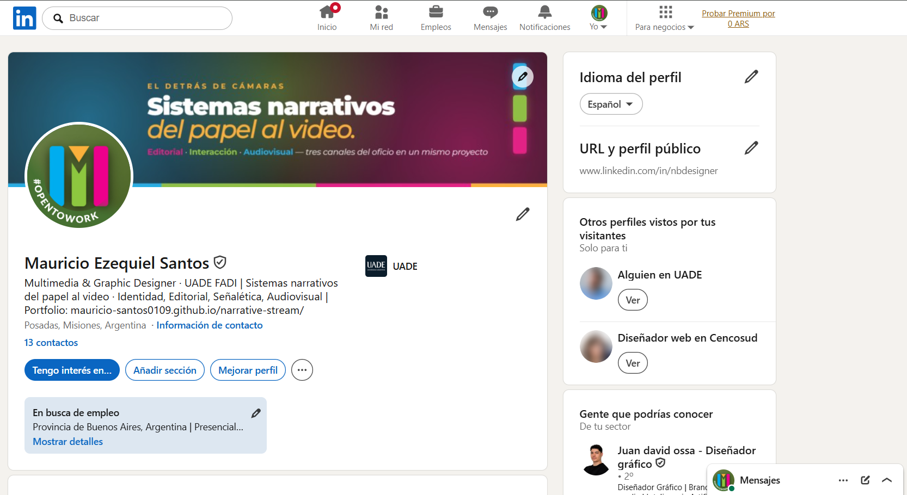
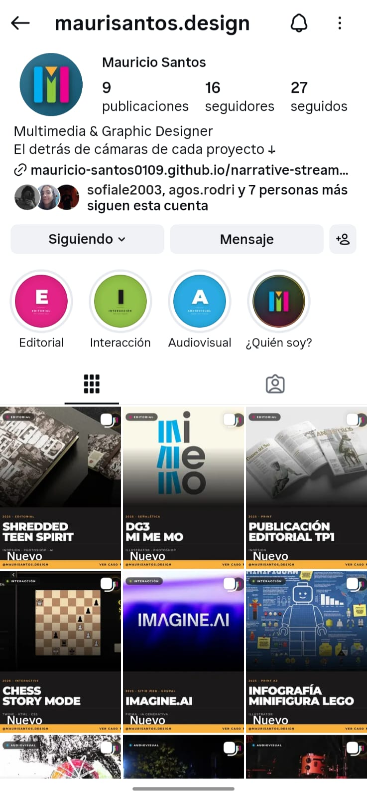
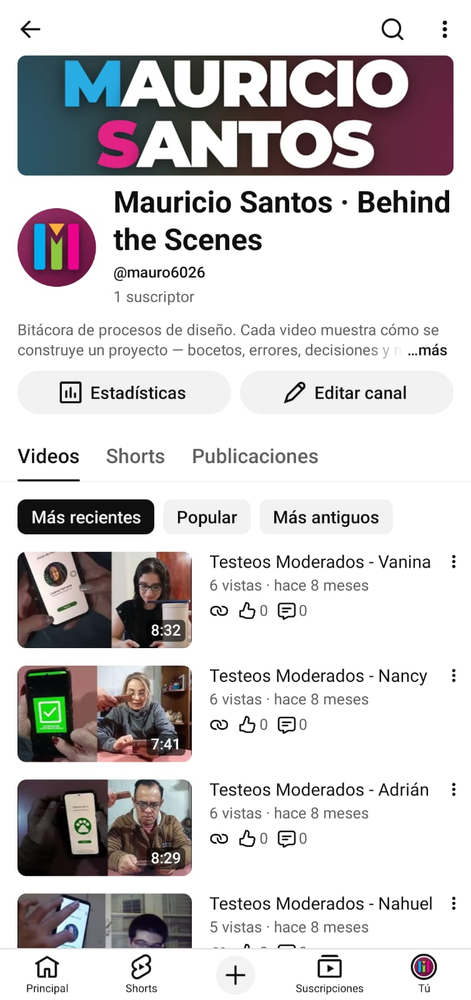
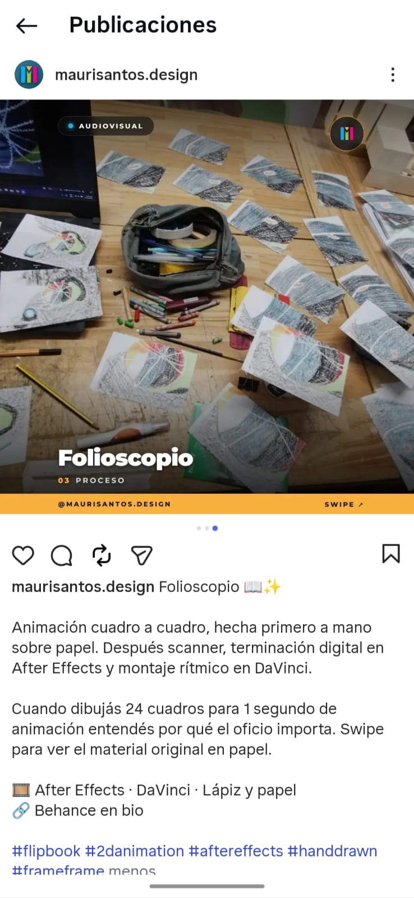
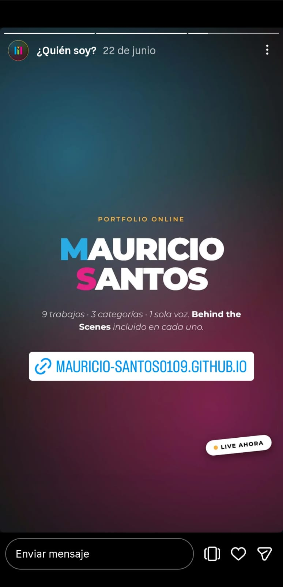

Frecuencia
1 post / semana
Tres redes, una sola marca. Cada plataforma adapta el sistema visual a su lenguaje nativo (desktop wide en LinkedIn, mobile vertical en Instagram y YouTube) manteniendo la paleta, la tipografía y el monograma "M" como anclaje. Las tres están publicadas y activas — no son mockups — con contenido en producción y QR directos a cada perfil.

Perfil real publicado. Banner horizontal con el sistema de marca, foto de perfil con monograma sobre paleta brand, headline alineado a la estrategia: "Multimedia & Graphic Designer · Sistemas narrativos del papel al video". La descripción incluye las 3 áreas (Editorial · Interacción · Audiovisual) y el link al portfolio.



Decisión gráfica: cada plataforma usa un color identitario del sistema de marca como acento (Instagram cian, LinkedIn lima, YouTube magenta), pero comparte la misma tipografía Montserrat, el mismo monograma "M" como foto de perfil, y el mismo QR como ancla al portfolio web. La continuidad de marca es visible al golpe de ojo.
Instagram es la red donde la identidad del diseñador aparece en 3 formatos nativos distintos. En el perfil el sistema se ve completo: profile pic + bio + 4 highlights customs (E · I · A · ¿Quién soy?) + grid 3×3 con los 9 trabajos etiquetados "Nuevo". En el post abierto, cada proyecto viene con su carousel BTS + caption con voz personal + hashtags técnicos. En la story "¿Quién soy?", el manifiesto sobre gradiente cyan-magenta con link directo al portfolio. Los 5 highlight covers que cierran la lámina son piezas diseñadas a dimensión exacta (1080×1920) recortadas a círculo por IG.

